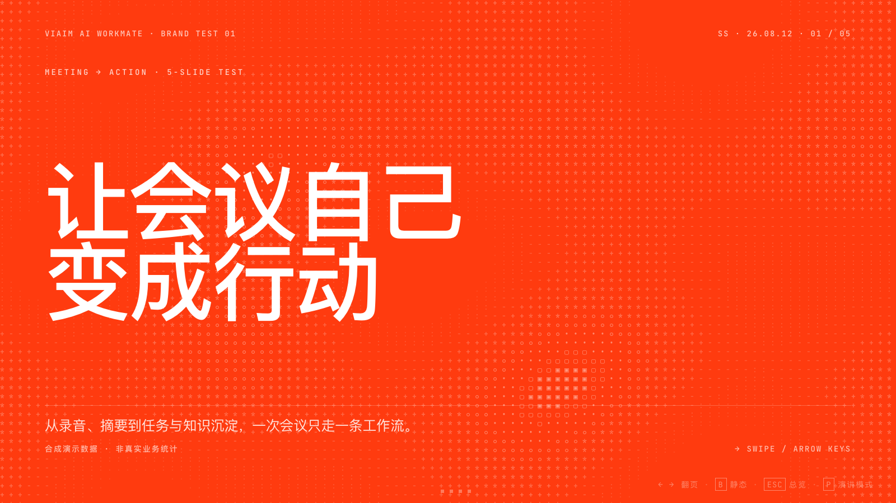
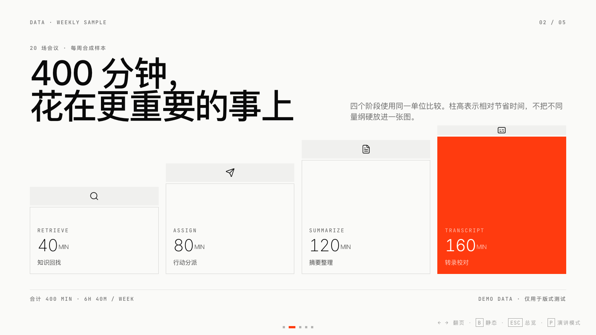
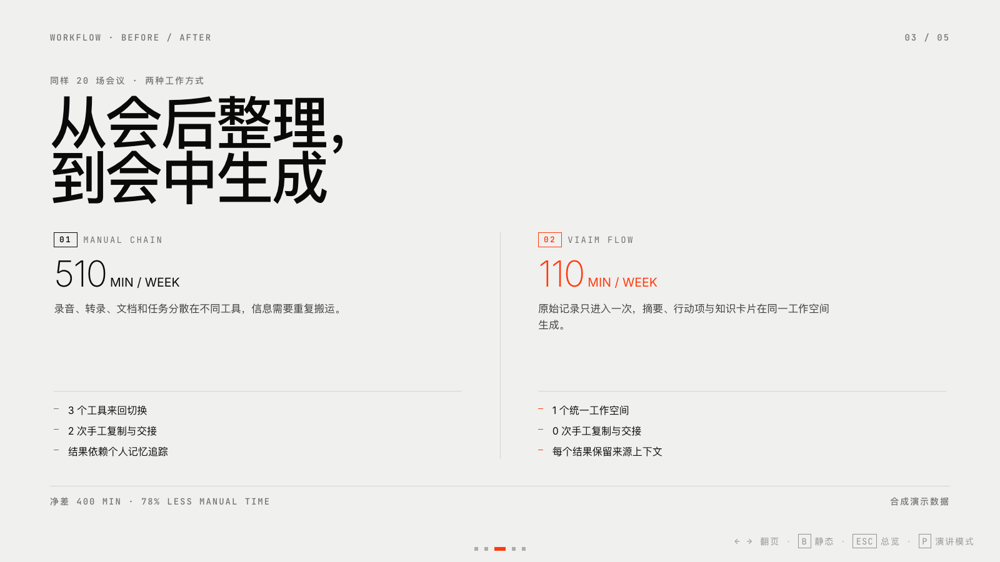
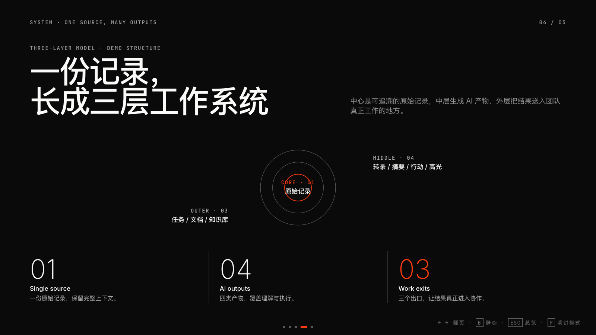
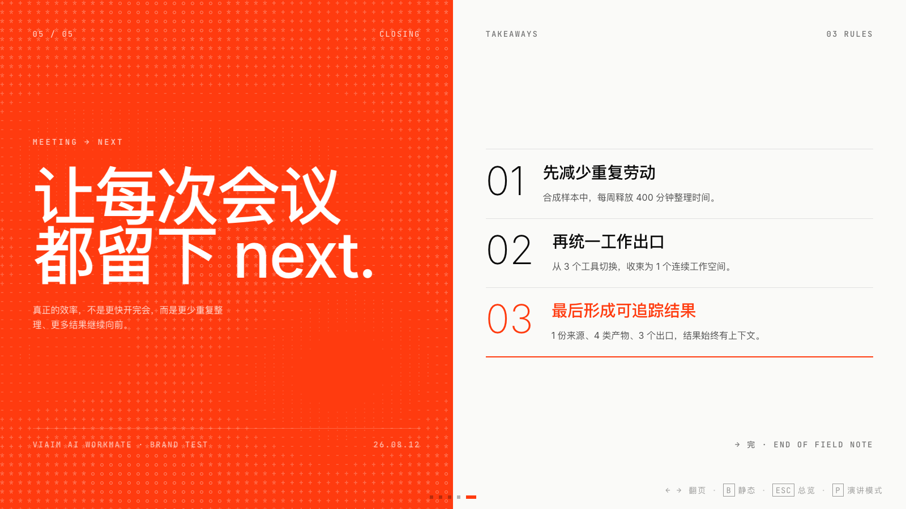

选版式
先看内容形状，再绑定 Sxx。
四个阶段使用同一单位比较。柱高表示相对节省时间，不把不同量纲硬放进一张图。
录音、转录、文档和任务分散在不同工具，信息需要重复搬运。
原始记录只进入一次，摘要、行动项与知识卡片在同一工作空间生成。
中心是可追溯的原始记录，中层生成 AI 产物，外层把结果送入团队真正工作的地方。
合成样本中，每周释放 400 分钟整理时间。
从 3 个工具切换，收束为 1 个连续工作空间。
1 份来源、4 类产物、3 个出口，结果始终有上下文。
完整覆盖 S01–S22，外加地图、图片矩阵、深色主题与演讲者模式变体；中文排版遵守 CLReq。
不是三十张模板拼盘，
而是五幕可复用叙事。
静态单页：只验证视觉风格。
加入数据、对比与时间线。
登记 Swiss locked layouts。
补齐品牌规则、图片、地图与演讲模式。
先看内容形状，再绑定 Sxx。
标题 500，正文 400–500。
数字、单位和图形保持同量纲。
本地资源绑定到登记槽位。
页面、备注和转场一一对应。
代码校验与真实截图双核对。
三个步骤结构同质，适合 S05，无需数据塔比较。
把需求拆成论断、数据、流程、结构或图片证据。
从登记版式复制骨架，填入内容、图像与语义化动效。
运行 validator，再用真实浏览器逐页截图检查。
先画页面再找内容，数据和视觉常常不匹配。
先判断内容类型，再从 S01–S22 绑定对应骨架。
论断、数据、流程、结构、图片，答案不同，版式就不同。
让结构忠于信息，不让信息迁就视觉效果。
视觉强度来自删减，不来自堆叠。标题、证据、说明和转场各守一个位置。
所有正文页来自登记骨架，标题回到左上内容轴。
标题固定 500，正文保持可投屏字号，全文使用正体。
数据页标明量纲，图片绑定槽位，输出经过真实浏览器截图。
按登记骨架生成页面。
运行结构与品牌校验。
真实浏览器逐页截图。
按测量值修正，再回到生成。
除 Statement 外，不把页面标题推到中央。
品牌主色背景不允许黑字或灰字。
所有 h1 / h2 / h3 和内部强调保持 Medium。
不使用斜体制造强调，改用尺度和留白。
本地资源必须声明 data-image-slot。
动画稳定后逐页检查，不只看代码。
从短测试到长报告，版式系统必须支持规模化复用。
定性、定量、结构和图片不能再用同一种卡片解决。
橙底白字、标题 500、全文正体必须成为默认行为。
横向翻页、动画与低功耗模式都在同一页面。
每页目的、讲述重点和转场，都按稳定 ID 保存。
品牌、版式、图片与演讲模式逐项验证。
用真实浏览器捕捉三十页最终画面和总览。
页面总数与页码全部一致。
S01–S22 全部至少出现一次。
每页备注与稳定 ID 一一对应。
真实浏览器逐页捕捉最终状态。
结构、品牌、演讲模式目标零错误。
所有值用于结构演示，
不是线上性能承诺。

主视觉来自前一版五页测试稿，保真展示，不重画 UI，也不让标题和数据进入图片本身。
地点页必须同时表达点位、连线、关系卡片与操作控件。无网络时保留静态 fallback。




05 · Closing主题可以切换；版式、字重、图片槽位与演讲备注保持一致。
三十页不是终点，而是一套可以继续生成、验证和演讲的起点。
S01–S22 不是装饰库，而是信息结构。
五色 token、橙底白字、CLReq 禁则、标题 500。
真实浏览器中的 30 页，才是最终交付。